Post-processing and standard plots#
This tutorial introduces the standardized post-processing interface. We run a small Vlasov–Ampère example, get its output as an autocomplete-friendly Output, and make the plots most commonly used to inspect a simulation.
For a production run you can skip the simulation setup and open its output folder with struphy.Output("path/to/sim") instead.
[1]:
import os
import tempfile
import matplotlib.pyplot as plt
import numpy as np
from IPython.display import HTML
from struphy import (
BinningPlot,
BoundaryParameters,
ButcherTableau,
DerhamOptions,
EnvironmentOptions,
KernelDensityPlot,
LoadingParameters,
SavingParameters,
Simulation,
SortingParameters,
Time,
WeightsParameters,
domains,
equils,
grids,
maxwellians,
perturbations,
)
from struphy.models import Maxwell, ViscousEulerSPH, VlasovAmpereOneSpecies
Create a compact demonstration run#
Post-processing operates on a completed run. The small setup below saves an electric field, a few marker trajectories, scalar diagnostics, and a binned \((\eta_1,v_1)\) distribution. These are the main output types handled by the plotting interface.
[2]:
def build_model():
model = VlasovAmpereOneSpecies(alpha=1.0, epsilon=-1.0, with_B0=False)
model.em_fields.e_field.save_data = True
model.em_fields.phi.save_data = True
model.kinetic_ions.var.save_data = True
model.propagators.push_eta.options = model.propagators.push_eta.Options()
model.propagators.coupling_va.options = model.propagators.coupling_va.Options()
model.initial_poisson.options = model.initial_poisson.Options(stab_mat="M0")
binplot = BinningPlot(
slice="e1_v1",
n_bins=(32, 32),
ranges=((0.0, 1.0), (-5.0, 5.0)),
)
model.kinetic_ions.set_markers(
loading_params=LoadingParameters(ppc=32, seed=1234),
weights_params=WeightsParameters(control_variate=True),
boundary_params=BoundaryParameters(),
sorting_params=SortingParameters(boxes_per_dim=(4, 1, 1), do_sort=True),
saving_params=SavingParameters(n_markers=12, binning_plots=(binplot,)),
)
background = maxwellians.Maxwellian3D(n=(1.0, None))
model.kinetic_ions.var.add_background(background)
density_mode = perturbations.ModesCos(ls=(1,), amps=(1e-3,))
model.kinetic_ions.var.add_initial_condition(maxwellians.Maxwellian3D(n=(1.0, density_mode)))
return model
model = build_model()
/opt/hostedtoolcache/Python/3.10.22/x64/lib/python3.10/site-packages/struphy/models/species.py:215: UserWarning: Override equation parameter self.alpha =1.0
warnings.warn(f"Override equation parameter {self.alpha =}")
/opt/hostedtoolcache/Python/3.10.22/x64/lib/python3.10/site-packages/struphy/models/species.py:222: UserWarning: Override equation parameter self.epsilon =-1.0
warnings.warn(f"Override equation parameter {self.epsilon =}")
[3]:
demo_tmp = tempfile.TemporaryDirectory(prefix="struphy_postprocessing_")
demo_root = demo_tmp.name
env = EnvironmentOptions(
out_folders=demo_root,
sim_folder="vlasov_ampere_demo",
save_restart=False,
)
sim = Simulation(
model=model,
env=env,
time_opts=Time(dt=0.05, Tend=5.0),
domain=domains.Cuboid(r1=2 * 3.141592653589793),
equil=equils.HomogenSlab(),
grid=grids.TensorProductGrid(num_elements=(16, 1, 1)),
derham_opts=DerhamOptions(degree=(2, 1, 1)),
)
out = sim.run(profiling_activated=True)
print(f"Raw output: {sim.env.path_out}")
Stabilizing Poisson solve with self.options.sigma_1 =1e-14
Time stepping: 100%|██████████| 100/100 [00:01<00:00, 65.48step/s]
╭─────────────────────────────────────────────────────────────────────────────────────────╮
│ region % session total [s] │
├─────────────────────────────────────────────────────────────────────────────────────────┤
│ scope_profiler.session 100.00% 1.689778 │
│ └─ (own) 1.26% 0.021312 │
│ └─ setup: total 9.42% 0.159174 │
│ │ └─ (own) 0.04% 0.000694 │
│ │ └─ setup: allocate 4.54% 0.076767 │
│ │ │ └─ (own) 0.01% 0.000088 │
│ │ │ └─ allocate feec 2.99% 0.050440 │
│ │ │ │ └─ (own) 0.01% 0.000096 │
│ │ │ │ └─ setup: derham 2.97% 0.050264 │
│ │ │ │ └─ setup: mass ops 0.00% 0.000011 │
│ │ │ │ └─ setup: basis ops 0.00% 0.000011 │
│ │ │ │ └─ setup: projected equil 0.00% 0.000058 │
│ │ │ └─ allocate variables 0.19% 0.003263 │
│ │ │ │ └─ (own) 0.01% 0.000148 │
│ │ │ │ └─ allocate var: em_fields.e_field 0.01% 0.000203 │
│ │ │ │ └─ allocate var: em_fields.phi 0.00% 0.000079 │
│ │ │ │ └─ allocate var: kinetic_ions.var 0.17% 0.002833 │
│ │ │ │ │ └─ (own) 0.16% 0.002695 │
│ │ │ │ │ └─ do_sort 0.01% 0.000139 │
│ │ │ └─ allocate propagators 0.95% 0.016133 │
│ │ │ │ └─ (own) 0.00% 0.000058 │
│ │ │ │ └─ allocate prop: PushEta 0.00% 0.000050 │
│ │ │ │ └─ allocate prop: VlasovAmpereCoupling 0.95% 0.016025 │
│ │ │ │ │ └─ (own) 0.89% 0.015049 │
│ │ │ │ │ └─ weights eval for None 0.00% 0.000004 │
│ │ │ │ │ └─ weights eval for M1 0.03% 0.000423 │
│ │ │ │ │ └─ assemble M1 0.03% 0.000549 │
│ │ │ └─ model post allocate 0.40% 0.006842 │
│ │ │ │ └─ (own) 0.18% 0.003041 │
│ │ │ │ └─ weights eval for M0 0.01% 0.000157 │
│ │ │ │ └─ assemble M0 0.01% 0.000252 │
│ │ │ │ └─ accum: charge_density_0form 0.01% 0.000239 │
│ │ │ │ │ └─ (own) 0.00% 0.000033 │
│ │ │ │ │ └─ kernel: charge_density_0form 0.01% 0.000145 │
│ │ │ │ │ └─ accum comm: charge_density_0form 0.00% 0.000062 │
│ │ │ │ └─ solve: PoissonSolve 0.18% 0.003093 │
│ │ │ │ └─ update_feec_variables 0.00% 0.000060 │
│ │ └─ setup: run metadata 0.07% 0.001227 │
│ │ └─ setup: data storage 0.36% 0.006059 │
│ │ └─ setup: geometry vtk 3.53% 0.059678 │
│ │ └─ setup: plasma params 0.19% 0.003237 │
│ │ └─ setup: initial diagnostics 0.06% 0.001056 │
│ │ └─ setup: hdf5 datasets 0.62% 0.010455 │
│ └─ model.integrate (100x) 42.94% 0.725511 │
│ │ └─ (own) 0.08% 0.001407 │
│ │ └─ prop: PushEta (100x) 3.86% 0.065224 │
│ │ │ └─ (own) 1.70% 0.028804 │
│ │ │ └─ pusher: push_eta_stage (100x) 2.16% 0.036421 │
│ │ │ │ └─ (own) 0.78% 0.013249 │
│ │ │ │ └─ kernel: push_eta_stage (400x) 1.37% 0.023172 │
│ │ └─ prop: VlasovAmpereCoupling (100x) 38.99% 0.658880 │
│ │ │ └─ (own) 2.65% 0.044801 │
│ │ │ └─ accum: vlasov_maxwell (100x) 9.68% 0.163562 │
│ │ │ │ └─ (own) 0.71% 0.011996 │
│ │ │ │ └─ kernel: vlasov_maxwell (100x) 4.42% 0.074651 │
│ │ │ │ └─ accum comm: vlasov_maxwell (200x) 4.55% 0.076916 │
│ │ │ └─ solve: SchurSolver (100x) 24.42% 0.412600 │
│ │ │ └─ pusher: push_v_with_efield (100x) 1.56% 0.026376 │
│ │ │ │ └─ (own) 0.41% 0.006952 │
│ │ │ │ └─ kernel: push_v_with_efield (100x) 1.15% 0.019424 │
│ │ │ └─ update_feec_variables (100x) 0.68% 0.011542 │
│ └─ diagnostics (100x) 4.77% 0.080659 │
│ └─ save data (101x) 41.61% 0.703121 │
╰─────────────────────────────────────────────────────────────────────────────────────────╯
╭─ Info ──────────────────────────────────────────────────────────────────────────────────────────────────────────────────────────────────────────────────╮
│ Summary: ../../../../../../../../tmp/struphy_postprocessing_hs3hu9_2/vlasov_ampere_demo/profiling_data.h5 (1 rank) │
│ │
│ Explore: │
│ Inspect: scope-profiler inspect ../../../../../../../../tmp/struphy_postprocessing_hs3hu9_2/vlasov_ampere_demo/profiling_data.h5 │
│ TUI: scope-profiler tui ../../../../../../../../tmp/struphy_postprocessing_hs3hu9_2/vlasov_ampere_demo/profiling_data.h5 │
│ │
│ Visualize and export: │
│ Plot: scope-profiler plot default ../../../../../../../../tmp/struphy_postprocessing_hs3hu9_2/vlasov_ampere_demo/profiling_data.h5 -o plots --show │
│ Report: scope-profiler report ../../../../../../../../tmp/struphy_postprocessing_hs3hu9_2/vlasov_ampere_demo/profiling_data.h5 -o report.html │
│ Export: scope-profiler export plot-data ../../../../../../../../tmp/struphy_postprocessing_hs3hu9_2/vlasov_ampere_demo/profiling_data.h5 -o data │
│ Lines: scope-profiler line-profile ../../../../../../../../tmp/struphy_postprocessing_hs3hu9_2/vlasov_ampere_demo/profiling_data.h5 │
│ │
│ Compare runs: │
│ Diff: scope-profiler diff BASE.h5 CANDIDATE.h5 │
│ Check: scope-profiler check BASE.h5 CANDIDATE.h5 │
│ │
│ Durations are in seconds. │
│ Regions may nest, so the summed total can exceed the wall-clock time. │
│ % session uses wall-clock coverage; overlapping recursive calls count once. │
╰─────────────────────────────────────────────────────────────────────────────────────────────────────────────────────────────────────────────────────────╯
Raw output: /tmp/struphy_postprocessing_hs3hu9_2/vlasov_ampere_demo
Process and load the output#
sim.run() returns an Output, which is also available later as sim.output. Scalars are read directly from the raw output; fields and particle products need post-processing, which runs with default options the first time they are accessed.
To choose options, call out.pproc() first. Output evaluates saved FEEC fields and organizes particle diagnostics; physical=True additionally creates physical field components. Existing products made with the same options are reused, so re-running a cell is cheap.
Individual products are standard xarray.DataArray objects with named dimensions, coordinates, units, and labels. Time is in Struphy units, in which the models’ analytic results are written; seconds come along as the coordinate t_seconds, and out.with_time_units("physical") gives an independent view with t in seconds. Arrays are loaded only when accessed. The saved configuration is available through out.domain, out.model, and out.time_opts; no simulation object is
created.
[4]:
out.pproc(physical=True)
Post-processing path /tmp/struphy_postprocessing_hs3hu9_2/vlasov_ampere_demo
Reading hdf5 data of following species:
em_fields:
e_field: <HDF5 group "/feec/em_fields/e_field" (3 members)>
phi: <HDF5 dataset "phi": shape (101, 20, 3, 3), type "<f8">
Creation of Struphy Fields done.
Evaluating fields ...
100%|██████████| 101/101 [00:00<00:00, 414.17it/s]
Evaluation of 12 marker orbits for kinetic_ions
100%|██████████| 101/101 [00:00<00:00, 797.48it/s]
Evaluation of distribution functions for kinetic_ions
0 starting post-processing of distribution functions for /tmp/struphy_postprocessing_hs3hu9_2/vlasov_ampere_demo/post_processing/kinetic_data/kinetic_ions ...
100%|██████████| 1/1 [00:00<00:00, 1282.27it/s]
0%| | 0/1 [00:00<?, ?it/s]rank = 0 ----------------------------
self._pproc_rank =0 with xp.sum(data) =np.float64(10342.800145647721) and xp.sum(data_df) =np.float64(0.31679856838042036)
self._pproc_rank =0 with xp.sum(data) =np.float64(10342.800145647721) and xp.sum(data_df) =np.float64(0.31679856838042036)
self._pproc_rank =0 done.
100%|██████████| 1/1 [00:00<00:00, 22.64it/s]
[4]:
Output('/tmp/struphy_postprocessing_hs3hu9_2/vlasov_ampere_demo', processed=True)
Products sit on the run under the species that produced them, so VS Code and interactive shells complete them as you type: out.kinetic_ions.e1_v1_density.f, out.kinetic_ions.orbits, out.em_fields.phi_log. To discover the products a particular namespace contains, inspect its flat, lazy .catalog: list(out.kinetic_ions.catalog). The grouped views out.fields, out.distributions, out.densities and out.orbits show the same products by kind. In scripts,
out.evaluate("kinetic_ions/f", dataset="e1_v1_density/f") looks up one explicitly.
[5]:
out.info()
Output: /tmp/struphy_postprocessing_hs3hu9_2/vlasov_ampere_demo
Key Description Load with
---------------------------------- ------------------------------------------------- ---------
electric_energy scalar time series (electric energy) out.evaluate('scalars', variables='electric_energy')
em_fields/e_field field (e_field) out.evaluate('em_fields/e_field')
em_fields/e_field_xyz field (e_field_xyz) out.evaluate('em_fields/e_field_xyz')
em_fields/phi field (phi) out.evaluate('em_fields/phi')
em_fields/phi_xyz field (phi_xyz) out.evaluate('em_fields/phi_xyz')
kinetic_energy scalar time series (kinetic energy) out.evaluate('scalars', variables='kinetic_energy')
kinetic_ions marker trajectories (x, y, z, v1, v2, v3, weight) out.evaluate('kinetic_ions/orbits')
kinetic_ions/e1_v1_density/delta_f particle distribution ($\delta f$) out.evaluate('kinetic_ions/delta_f', dataset='kinetic_ions/e1_v1_density/delta_f')
kinetic_ions/e1_v1_density/f particle distribution ($f$) out.evaluate('kinetic_ions/f', dataset='kinetic_ions/e1_v1_density/f')
total_energy scalar time series (total energy) out.evaluate('scalars', variables='total_energy')
Hints
-----
- t=-1 (index), t=slice(...) or t=0.5 (time value) selects snapshots; the t dimension is kept.
- Other keyword arguments select named coordinates, e.g. component=0 or marker=[0, 1, 2].
- Fields: pass eta1=, eta2=, eta3= (scalars or 1D arrays) to evaluate on a logical grid;
omitted directions default to 0.5. The result carries physical coordinates X, Y, Z.
- Particles: out.info('species/variable') lists alternative datasets for dataset=.
- Orbits are an xarray.Dataset with one (t, marker) variable per quantity, e.g. orbits.x;
each variable's 'description' attribute says what it is.
- Results are xarray objects: use .sel/.isel, .plot(x='X'), or .values for NumPy.
[6]:
print(out.kinetic_ions)
ProductNamespace('kinetic_ions', products=('e1_v1_density/delta_f', 'e1_v1_density/f', 'orbits'))
Reconstructed setup and initial conditions#
out.info() prints every evaluable key with a short description and the exact out.evaluate(...) call that loads it, followed by a few hints on selecting times and coordinates. The run configuration is not part of info(): in out.metadata, serialized initial conditions live on each variable under model → species → variables → initial_conditions. out.initial_conditions gives reconstructed objects, including saved Python functions and classes; out.model restores them onto
the model variables. Unsupported definitions remain available in out.metadata.
[7]:
print("Model parameters:", out.model.params)
print("Kinetic variables:", out.model.kinetic_ions.variables)
print("Propagator options:")
for name, options in out.metadata["model"]["propagator_options"].items():
print(f" {name}: {options}")
saved = out.metadata["model"]["species"]["kinetic_ions"]["variables"]["var"]["initial_conditions"]
print("Initial-condition entries:", tuple(saved))
initial = out.initial_conditions["kinetic_ions"]["var"]
print("Background distribution:", initial["backgrounds"])
print("Initial distribution:", initial["initial_condition"])
Model parameters: {'base_units': BaseUnits(x=1.0, B=1.0, n=1.0, kBT=None), 'charge_number': 1, 'mass_number': 1.0, 'alpha': 1.0, 'epsilon': -1.0, 'with_B0': False}
Kinetic variables: {'var': PICVariable (Particles6D)}
Propagator options:
push_eta: {'butcher': {'algo': 'rk4'}}
coupling_va: {'solver': 'pcg', 'precond': 'MassMatrixPreconditioner', 'solver_params': {'tol': 1e-08, 'maxiter': 3000, 'info': False, 'recycle': True}}
Initial-condition entries: ('backgrounds', 'perturbations', 'initial_condition')
Background distribution: Maxwellian3D(
n=(1.0, None),
u1=(0.0, None),
u2=(0.0, None),
u3=(0.0, None),
vth1=(1.0, None),
vth2=(1.0, None),
vth3=(1.0, None),
uniform_on_disc=False,
)
Initial distribution: Maxwellian3D(
n=(1.0, ModesCos(
ls=(1,),
ms=None,
ns=None,
amps=(0.001,),
Lx=1.0,
Ly=1.0,
Lz=1.0,
given_in_basis=None,
comp=0,
perb_domain=(None, None, None),
)),
u1=(0.0, None),
u2=(0.0, None),
u3=(0.0, None),
vth1=(1.0, None),
vth2=(1.0, None),
vth3=(1.0, None),
uniform_on_disc=False,
)
The reconstructed kinetic distributions are ordinary Struphy background objects. Here we evaluate the saved equilibrium and initial distribution along \(\eta_1\); their difference is the density perturbation that seeded the run.
[8]:
background = initial["backgrounds"]
initial_distribution = initial["initial_condition"]
eta1 = np.linspace(0.0, 1.0, 256)
zeros = np.zeros_like(eta1)
n_background = np.asarray(background.n(eta1, zeros, zeros))
n_initial = np.asarray(initial_distribution.n(eta1, zeros, zeros))
fig, ax = plt.subplots()
ax.plot(eta1, n_background, label="background density")
ax.plot(eta1, n_initial, label="initial density")
ax.plot(eta1, n_initial - n_background, label="density perturbation")
ax.set(xlabel=r"$\eta_1$", ylabel="density", title="Saved kinetic initial condition")
ax.legend();
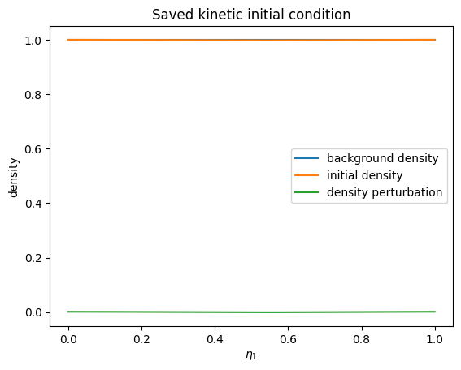
[9]:
phase_space = out.kinetic_ions.e1_v1_density.f
print(phase_space)
<xarray.DataArray 'f' (t: 101, eta1: 32, v1: 32)> Size: 827kB
[103424 values with dtype=float64]
Coordinates:
* t (t) float64 808B 0.0 0.05 0.1 0.15 0.2 ... 4.8 4.85 4.9 4.95 5.0
* eta1 (eta1) float64 256B 0.01562 0.04688 0.07812 ... 0.9531 0.9844
* v1 (v1) float64 256B -4.844 -4.531 -4.219 ... 4.219 4.531 4.844
t_seconds (t) float64 808B 0.0 1.668e-10 3.336e-10 ... 1.651e-08 1.668e-08
Attributes:
label: $f$
long_name: $f$
run: dt=0.05, algo=LieTrotter, Nel=(16, 1, 1), p=(2, 1, 1)
run_name: vlasov_ampere_demo
Evaluate saved splines directly: 1-D, 2-D, and 3-D#
evaluate() reads saved FEEC coefficients and evaluates the spline directly, without creating a post-processing field. With no eta arguments, it evaluates the full simulation grid at its cell centres. For cuts, pass a scalar for each direction to hold fixed; omitted directions stay on the cell centres of the simulation grid. Scalars, lists, NumPy arrays, and range objects can be mixed; every non-scalar input becomes a dimension of the tensor-product result. Thus one varying coordinate
makes a 1-D line, two make a 2-D plane, and no coordinates makes a 3-D volume. The result is always an xarray array with logical eta1/eta2/eta3 coordinates and mapped physical X/Y/Z coordinates.
A representation conversion is applied after spline evaluation. Its input is inferred from the saved FEEC space, so representation= specifies only the target: "0", "1", "2", "3", "v", or "norm". Scalars default to "0"; vectors default to "norm".
[10]:
# 1-D: a field line at eta2 = eta3 = 0.5.
eta1_line = np.linspace(0.0, 1.0, 128)
phi_line = out.evaluate(
"em_fields/phi",
eta1=eta1_line,
eta2=0.5,
eta3=0.5,
t=-1,
)
phi_line.plot()
print(phi_line.dims, phi_line.shape)
('eta1',) (128,)
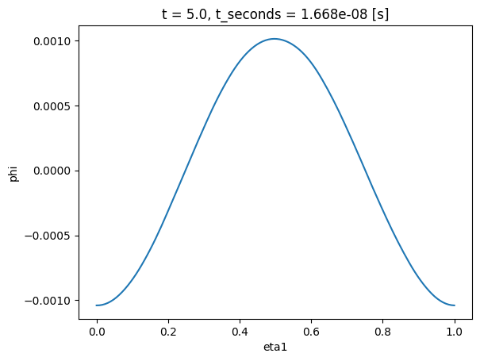
For a 2-D plane, vary two coordinates and hold the third fixed. This is useful for a cross-section of a 3-D field even when the simulation was run on a coarser grid: the spline is evaluated at the requested points. For a 3-D volume, vary all three coordinates. Keep volume grids modest, then take a plane or line from the labeled result for plotting or further analysis.
[11]:
# 2-D: a logical eta1--eta2 plane at eta3 = 0.5.
phi_plane = out.evaluate(
"em_fields/phi",
eta1=np.linspace(0.0, 1.0, 64),
eta2=np.linspace(0.0, 1.0, 48),
eta3=0.5,
t=-1,
)
phi_plane.plot(x="eta1", y="eta2")
# 3-D: vary all three coordinates; keep volume grids modest.
phi_volume = out.evaluate(
"em_fields/phi",
eta1=np.linspace(0.0, 1.0, 32),
eta2=np.linspace(0.0, 1.0, 16),
eta3=np.linspace(0.0, 1.0, 8),
t=-1,
)
print(phi_volume.dims, phi_volume.shape)
# xarray plots a 2-D slice of the volume; choose the mid-plane by coordinate index.
phi_volume.isel(eta3=phi_volume.sizes["eta3"] // 2).plot(x="eta1", y="eta2")
# Without eta arguments the spline is evaluated at the cell centres of the simulation grid,
# here 16 x 1 x 1 cells, so this run's grid gives a line along eta1.
phi_grid = out.evaluate("em_fields/phi", t=-1)
print(phi_grid.dims, phi_grid.shape)
('eta1', 'eta2', 'eta3') (32, 16, 8)
('eta1', 'eta2', 'eta3') (16, 1, 1)
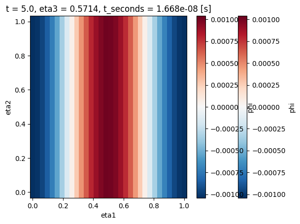
Inspecting out itself#
Most of what out exposes is generated on demand (__getattr__, cached properties), so vars(out) only shows a handful of private cache slots, not the products or methods. Use dir(out) for the flat list IPython’s own tab-completion relies on, and out.info() for the full product tree. The same applies one level down: out.model is not a generic stub but the concrete model class of the run (VlasovAmpereOneSpecies here), so dir(out.model) and print(out.model) already
show that model’s own parameters directly — no separate OutputVlasovAmpereOneSpecies-style class is needed.
[12]:
print("vars(out):", vars(out)) # only private cache slots
vars(out): {'path_out': PosixPath('/tmp/struphy_postprocessing_hs3hu9_2/vlasov_ampere_demo'), '_time_units': 'normalized', 'comm': SerialComm(COMM_WORLD), '_time': None, '_grids_log': None, '_grids_phy': None, '_scalars': <xarray.Dataset> Size: 4kB
Dimensions: (t: 101)
Coordinates:
* t (t) float64 808B 0.0 0.05 0.1 0.15 ... 4.85 4.9 4.95 5.0
t_seconds (t) float64 808B 0.0 1.668e-10 ... 1.651e-08 1.668e-08
Data variables:
electric_energy (t) float64 808B 1.662e-06 1.651e-06 ... 1.494e-07
kinetic_energy (t) float64 808B 0.0003264 0.0003055 ... -0.0003428
total_energy (t) float64 808B 0.0003281 0.0003071 ... -0.0003426, '_products': {'fields': <struphy.post_processing.output.ProductMapping object at 0x7f8ee8c1ffa0>, 'distributions': <struphy.post_processing.output.ProductMapping object at 0x7f8ee89055d0>, 'densities': <struphy.post_processing.output.ProductMapping object at 0x7f8ee8905390>, 'orbits': <struphy.post_processing.output.ProductMapping object at 0x7f8ee89055a0>}, '_label': 'dt=0.05, algo=LieTrotter, Nel=(16, 1, 1), p=(2, 1, 1)', '_profile': None, '_tree': <xarray.DataTree>
Group: /
│ Attributes:
│ schema_version: 2
│ options: {"step": 1, "celldivide": [1, 1, 1], "physical": true, "...
├── Group: /em_fields
│ Dimensions: (t: 101, component: 3, eta1: 17, eta2: 2, eta3: 2)
│ Coordinates:
│ * t (t) float64 808B 0.0 0.05 0.1 0.15 0.2 ... 4.85 4.9 4.95 5.0
│ * component (component) int64 24B 0 1 2
│ * eta1 (eta1) float64 136B 0.0 0.0625 0.125 ... 0.875 0.9375 1.0
│ * eta2 (eta2) float64 16B 0.0 1.0
│ * eta3 (eta3) float64 16B 0.0 1.0
│ X (eta1, eta2, eta3) float64 544B ...
│ Y (eta1, eta2, eta3) float64 544B ...
│ Z (eta1, eta2, eta3) float64 544B ...
│ Data variables:
│ e_field (t, component, eta1, eta2, eta3) float64 165kB ...
│ e_field_xyz (t, component, eta1, eta2, eta3) float64 165kB ...
│ phi (t, eta1, eta2, eta3) float64 55kB ...
│ phi_xyz (t, eta1, eta2, eta3) float64 55kB ...
└── Group: /kinetic_ions
├── Group: /kinetic_ions/orbits
│ Dimensions: (t: 101, marker: 12)
│ Coordinates:
│ * t (t) float64 808B 0.0 0.05 0.1 0.15 0.2 ... 4.8 4.85 4.9 4.95 5.0
│ * marker (marker) int64 96B 0 1 2 3 4 5 6 7 8 9 10 11
│ Data variables:
│ x (t, marker) float64 10kB ...
│ y (t, marker) float64 10kB ...
│ z (t, marker) float64 10kB ...
│ v1 (t, marker) float64 10kB ...
│ v2 (t, marker) float64 10kB ...
│ v3 (t, marker) float64 10kB ...
│ weight (t, marker) float64 10kB ...
│ Attributes:
│ product: orbits
│ label: marker orbits
└── Group: /kinetic_ions/e1_v1_density
Dimensions: (t: 101, eta1: 32, v1: 32)
Coordinates:
* t (t) float64 808B 0.0 0.05 0.1 0.15 0.2 ... 4.8 4.85 4.9 4.95 5.0
* eta1 (eta1) float64 256B 0.01562 0.04688 0.07812 ... 0.9531 0.9844
* v1 (v1) float64 256B -4.844 -4.531 -4.219 -3.906 ... 4.219 4.531 4.844
Data variables:
f (t, eta1, v1) float64 827kB ...
delta_f (t, eta1, v1) float64 827kB ..., '_species': {'em_fields', 'kinetic_ions'}, '_seconds': 3.3356409519815204e-09, '_spline_derham': <struphy.feec.psydac_derham.Derham object at 0x7f8ee87eac80>, '_spline_snapshots': {100: {'em_fields': {'e_field': <struphy.feec.psydac_derham.SplineFunction object at 0x7f8ee8ddae60>, 'phi': <struphy.feec.psydac_derham.SplineFunction object at 0x7f8ee8c5f370>}}}, '_polar_restart_ops': {}, 'metadata': {'name': '', 'description': '', 'model': {'model': 'VlasovAmpereOneSpecies', 'params': {'base_units': {'BaseUnits': {'x': 1.0, 'B': 1.0, 'n': 1.0, 'kBT': None}}, 'charge_number': 1, 'mass_number': 1.0, 'alpha': 1.0, 'epsilon': -1.0, 'with_B0': False}, 'species': {'em_fields': {'class': 'EMFields', 'charge_number': 0, 'mass_number': 0, 'alpha': None, 'epsilon': None, 'kappa': None, 'variables': {'e_field': {'class': 'FEECVariable', 'space': 'Hcurl', 'save_data': True, 'projection': 'commuting', 'initial_conditions': {'backgrounds': None, 'perturbations': None}}, 'phi': {'class': 'FEECVariable', 'space': 'H1', 'save_data': True, 'projection': 'commuting', 'initial_conditions': {'backgrounds': None, 'perturbations': None}}}}, 'kinetic_ions': {'class': 'KineticIons', 'charge_number': 1, 'mass_number': 1.0, 'alpha': 1.0, 'epsilon': -1.0, 'kappa': None, 'variables': {'var': {'class': 'PICVariable', 'space': 'Particles6D', 'save_data': True, 'n_as_volume_form': False, 'initial_conditions': {'backgrounds': {'type': 'Maxwellian3D', 'params': {'n': [1.0, None], 'u1': [0.0, None], 'u2': [0.0, None], 'u3': [0.0, None], 'vth1': [1.0, None], 'vth2': [1.0, None], 'vth3': [1.0, None], 'uniform_on_disc': False}}, 'perturbations': None, 'initial_condition': {'type': 'Maxwellian3D', 'params': {'n': [1.0, {'type': 'ModesCos', 'params': {'ls': [1], 'ms': None, 'ns': None, 'amps': [0.001], 'Lx': 1.0, 'Ly': 1.0, 'Lz': 1.0, 'given_in_basis': None, 'comp': 0, 'perb_domain': [None, None, None]}}], 'u1': [0.0, None], 'u2': [0.0, None], 'u3': [0.0, None], 'vth1': [1.0, None], 'vth2': [1.0, None], 'vth3': [1.0, None], 'uniform_on_disc': False}}}}}, 'loading_params': {'Np': 5000, 'ppc': 32, 'ppb': None, 'loading': 'pseudo_random', 'seed': 1234, 'moments': [0.0, 0.0, 0.0, 1.0, 1.0, 1.0], 'B0': 2.0, 'spatial': 'uniform', 'specific_markers': None, 'set_zero_velocity': [False, False, False], 'n_quad': 1, 'dir_external': None, 'dir_particles': None, 'dir_particles_abs': None, 'restart_key': None}, 'weights_params': {'control_variate': True, 'reject_weights': False, 'threshold': 0.0}, 'boundary_params': {'bc': ['periodic', 'periodic', 'periodic'], 'bc_refill': None, 'bc_sph': ['periodic', 'periodic', 'periodic'], 'mean_velocity_index': None}, 'sorting_params': {'do_sort': True, 'sorting_frequency': 0, 'boxes_per_dim': [4, 1, 1], 'box_bufsize': 2.0, 'dims_mask': [True, True, True]}, 'saving_params': {'n_markers': 12, 'binning_plots': [{'slice': 'e1_v1', 'n_bins': [32, 32], 'ranges': [[0.0, 1.0], [-5.0, 5.0]], 'divide_by_jac': True, 'output_quantity': 'density'}], 'kernel_density_plots': []}, 'bufsize': 1.0}}, 'propagator_options': {'push_eta': {'butcher': {'algo': 'rk4'}}, 'coupling_va': {'solver': 'pcg', 'precond': 'MassMatrixPreconditioner', 'solver_params': {'tol': 1e-08, 'maxiter': 3000, 'info': False, 'recycle': True}}}, 'initial_conditions_schema_version': 1}, 'params_path': None, 'env': {'out_folders': '/tmp/struphy_postprocessing_hs3hu9_2', 'sim_folder': 'vlasov_ampere_demo', 'sim_label': None, 'restart': False, 'max_runtime': 300, 'save_step': 1, 'save_restart': False, 'sort_step': 0, 'num_clones': 1}, 'time_opts': {'dt': 0.05, 'Tend': 5.0, 'split_algo': 'LieTrotter'}, 'domain': {'type': 'Cuboid', 'params': {'l1': 0.0, 'r1': 6.283185307179586, 'l2': 0.0, 'r2': 1.0, 'l3': 0.0, 'r3': 1.0}}, 'equil': {'type': 'HomogenSlab', 'params': {'B0x': 0.0, 'B0y': 0.0, 'B0z': 1.0, 'beta': 0.1, 'n0': 1.0}}, 'grid': {'num_elements': [16, 1, 1], 'mpi_dims_mask': [True, True, True]}, 'derham_opts': {'degree': [2, 1, 1], 'bcs': [None, None, None], 'nquads': None, 'nquads_proj': None, 'polar_splines': False, 'local_projectors': False, 'polar_poloidal_solver': 'schur'}, 'profiling_opts': {'file_path': None, 'label': None, 'use_likwid': None, 'perf_events': None, 'use_line_profiler': None, 'use_memray': None, 'memory_profile_path': None, 'memray_native_traces': None, 'memray_trace_python_allocators': None, 'memray_follow_fork': None, 'deactivate_profiling': None, 'use_nvtx': None, 'use_gpu_timing': None, 'gpu_timing_backend': None, 'deactivate_file_output': None, 'recursive_profile': None, 'aggregation_mode': None, 'profile_mpi_calls': None, 'track_threads': None, 'track_async': None, 'capture_region_source': None, 'metadata_detail': None, 'buffer_limit': None, 'output_mode': None, 'hdf5_compression': None, 'hdf5_compression_level': None, 'hdf5_chunk_size': None, 'memray': None, 'gpu': None, 'hdf5': None}, 'mpi_ranks': 1, 'use_mpi_comm_world': False, 'started_at_epoch_s': 1792140986.4117007, 'one_time_step': False, 'profiling_activated': True}, 'mpi_ranks': 1, 'grid': TensorProductGrid(
num_elements=(16, 1, 1),
mpi_dims_mask=(True, True, True),
), 'derham_opts': DerhamOptions(
degree=(2, 1, 1),
bcs=(None, None, None),
nquads=None,
nquads_proj=None,
polar_splines=False,
local_projectors=False,
polar_poloidal_solver='schur',
), 'domain': Cuboid(
l1=0.0,
r1=6.283185307179586,
l2=0.0,
r2=1.0,
l3=0.0,
r3=1.0,
), 'initial_conditions': {'em_fields': {'e_field': {'backgrounds': None, 'perturbations': None}, 'phi': {'backgrounds': None, 'perturbations': None}}, 'kinetic_ions': {'var': {'backgrounds': Maxwellian3D(
n=(1.0, None),
u1=(0.0, None),
u2=(0.0, None),
u3=(0.0, None),
vth1=(1.0, None),
vth2=(1.0, None),
vth3=(1.0, None),
uniform_on_disc=False,
), 'perturbations': None, 'initial_condition': Maxwellian3D(
n=(1.0, ModesCos(
ls=(1,),
ms=None,
ns=None,
amps=(0.001,),
Lx=1.0,
Ly=1.0,
Lz=1.0,
given_in_basis=None,
comp=0,
perb_domain=(None, None, None),
)),
u1=(0.0, None),
u2=(0.0, None),
u3=(0.0, None),
vth1=(1.0, None),
vth2=(1.0, None),
vth3=(1.0, None),
uniform_on_disc=False,
)}}}, 'model': VlasovAmpereOneSpecies(
base_units=BaseUnits(x=1.0, B=1.0, n=1.0, kBT=None),
charge_number=1,
mass_number=1.0,
alpha=1.0,
epsilon=-1.0,
with_B0=False,
), 'time_opts': Time(
dt=0.05,
Tend=5.0,
split_algo='LieTrotter',
)}
[13]:
print("dir(out):", [name for name in dir(out) if not name.startswith("_")])
dir(out): ['analysis', 'catalog', 'clear_cache', 'close', 'comm', 'compare', 'densities', 'density_catalog', 'derham_opts', 'distribution_catalog', 'distributions', 'domain', 'em_fields', 'equil', 'evaluate', 'field_basis', 'field_catalog', 'field_form', 'fields', 'grid', 'grids_log', 'grids_phy', 'info', 'initial_conditions', 'is_processed', 'iter_spline_coefficients', 'keys', 'kinetic_ions', 'label', 'metadata', 'model', 'mpi_ranks', 'orbit_catalog', 'orbits', 'path_out', 'path_pproc', 'plot', 'pproc', 'profile', 'provenance', 'report', 'save_scalars', 'scalars', 'seconds_per_time', 'species_catalog', 'spline_fields', 'standard_snapshots', 'time', 'time_opts', 'time_scale', 'time_unit', 'time_units', 'to_si', 'tree', 'units', 'with_physical_coords', 'with_time_units', 'xarray']
[14]:
print(out.model) # the concrete model class, with its own parameters
VlasovAmpereOneSpecies(
base_units=BaseUnits(x=1.0, B=1.0, n=1.0, kBT=None),
charge_number=1,
mass_number=1.0,
alpha=1.0,
epsilon=-1.0,
with_B0=False,
)
[15]:
print("dir(out.model):", [name for name in dir(out.model) if not name.startswith("_")][:15])
dir(out.model): ['EMFields', 'KineticIons', 'Propagators', 'base_units', 'bulk_species', 'cannot_be_used_for', 'cannot_be_used_for_html', 'cannot_be_used_for_latex', 'cannot_be_used_for_markdown', 'clone_config', 'create_doc', 'diagnostic_species', 'discretization', 'discretization_html', 'discretization_latex']
Products are xarray arrays#
A product is an xarray.DataArray, so xarray’s own plotting already draws it, with the labels and units Struphy stored:
[16]:
phase_space.isel(t=-1).plot(x="eta1", y="v1")
[16]:
<matplotlib.collections.QuadMesh at 0x7f8ee8578fa0>

Use xarray’s plotting methods for ordinary one- and two-dimensional output. Select a saved time or spatial slice with .isel() or .sel() first, then call .plot() or .plot.line().
Scalar overview and time series#
Field and particle products are xarray DataArray objects; out.evaluate("scalars") returns an xarray Dataset. out.evaluate("kinetic_ions/f", dataset="e1_v1_density/f") looks a product up by name, which suits scripts and loops; attribute access is convenient interactively.
Call .plot() for a scalar time series. Use a Matplotlib axes when combining several series or setting plot options.
[17]:
out.scalars.electric_energy.plot.line(x="t")
[17]:
[<matplotlib.lines.Line2D at 0x7f8ee863b400>]
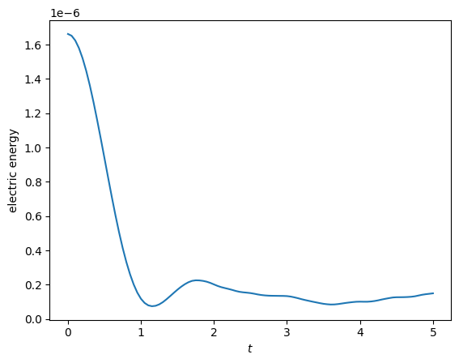
[18]:
t_fit = 2.0 # Struphy time units, like every time coordinate of this run
energy = out.scalars.electric_energy.sel(t=slice(0.0, t_fit))
fig, ax = plt.subplots()
energy.plot.line(ax=ax, label="electric energy")
ax.set_yscale("log")
ax.legend()
[18]:
<matplotlib.legend.Legend at 0x7f8ee849ce80>
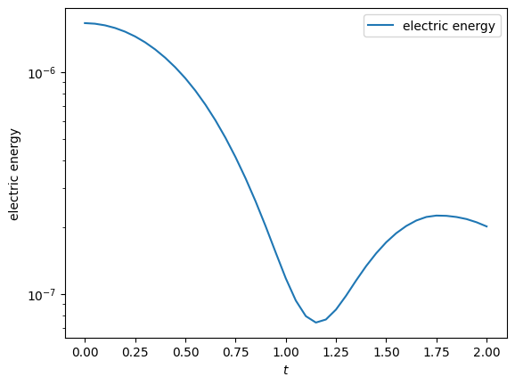
Two-dimensional data#
Choose the displayed dimensions with x and y, and pick one value for every other dimension by naming it: t="last" (or "first"), t=-1 for a position, and t=0.35 for the nearest coordinate value. Arrays can also be sliced beforehand with xarray’s .isel() and .sel(). coords="physical" draws on the mapped coordinates instead of the logical ones.
[19]:
phase_space.isel(t=-1).plot(x="eta1", y="v1")
[19]:
<matplotlib.collections.QuadMesh at 0x7f8ee8435bd0>

For a compact view of the evolution, select saved times and use xarray faceting.
[20]:
phase_space.isel(t=np.linspace(0, phase_space.sizes["t"] - 1, 5, dtype=int)).plot(x="eta1", y="v1", col="t", col_wrap=5)
[20]:
<xarray.plot.facetgrid.FacetGrid at 0x7f8ee83a5270>
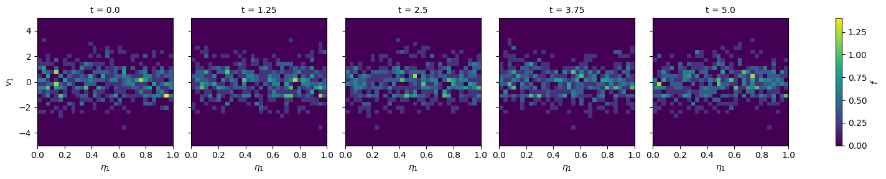
Selecting saved snapshots#
Use .isel() for index-based selection and .sel() for coordinate-based selection. This keeps selection explicit and works with every xarray operation.
[21]:
final_phase_space = phase_space.isel(t=-1)
final_phase_space.plot(x="eta1", y="v1")
[21]:
<matplotlib.collections.QuadMesh at 0x7f8ee8158580>

Saved marker orbits sit under their species as an xarray.Dataset with one (t, marker) variable per quantity (x, y, z, velocities, weight); each variable’s description attribute says what it is. Select one marker and plot its positions over time.
[22]:
orbit = out.kinetic_ions.orbits.isel(marker=0)
orbit[["x", "y", "z"]].to_dataarray("quantity").plot.line(x="t", hue="quantity")
[22]:
[<matplotlib.lines.Line2D at 0x7f8ee8544910>,
<matplotlib.lines.Line2D at 0x7f8ee8546350>,
<matplotlib.lines.Line2D at 0x7f8ee838d660>]
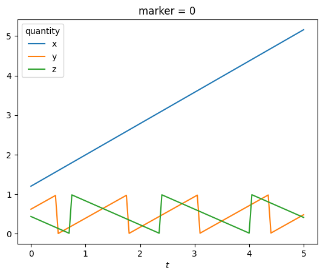
A small collection of explicit snapshots is often more useful in a reproducible notebook than an interactive widget or animation.
[23]:
phase_space.isel(t=[0, -1]).plot(x="eta1", y="v1", col="t")
[23]:
<xarray.plot.facetgrid.FacetGrid at 0x7f8ee810bbb0>
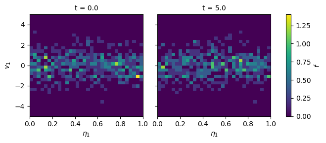
[24]:
fig, ax = plt.subplots()
phase_space.isel(t=-1).plot(ax=ax, x="eta1", y="v1")
fig.savefig(os.path.join(demo_root, "phase_space_final.png"), bbox_inches="tight")
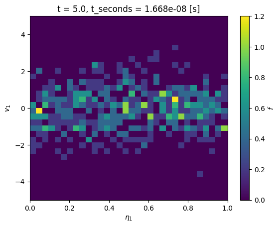
The reconstructed equilibrium is available directly on the output handle for inspection and for model-specific analysis.
[25]:
print(out.equil)
HomogenSlab(
B0x=0.0,
B0y=0.0,
B0z=1.0,
beta=0.1,
n0=1.0,
)
Derived quantities#
xarray arithmetic computes derived quantities without special APIs. For example, subtract the first sample to obtain a drift and divide by it to obtain a relative error.
[26]:
total_energy = out.scalars.total_energy
energy_drift = total_energy - total_energy.isel(t=0)
energy_error = abs(energy_drift) / abs(total_energy.isel(t=0))
print(f"largest drift of the total energy: {abs(energy_drift).max().item():.3e}")
energy_error.plot.line(x="t")
largest drift of the total energy: 6.707e-04
[26]:
[<matplotlib.lines.Line2D at 0x7f8ee1e582b0>]
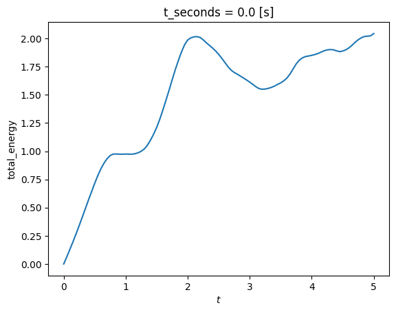
For custom diagnostics, first select the labeled subset needed for the calculation. Here a space-time field line is retained as an xarray object, ready for NumPy, SciPy, or another analysis package.
[27]:
space_time_line = out.evaluate("em_fields/phi", eta1=np.linspace(0.0, 1.0, 64), eta2=0.5, eta3=0.5)
print(space_time_line.dims, space_time_line.shape)
('t', 'eta1') (101, 64)
Reducing distribution functions#
A binned distribution usually has more dimensions than the question needs. Xarray reductions retain the remaining named dimensions, so averaging over e1, e2 and e3 turns the \((\eta_1, v_1)\) product into \(f(v_1, t)\). The mean is uniform in logical coordinates, which is a volume average on a Cartesian domain.
[28]:
# average over whichever logical space directions the binning kept
spatial = [dim for dim in ("eta1", "eta2", "eta3") if dim in phase_space.dims]
f_of_v = phase_space.mean(spatial)
print(f_of_v.dims)
f_of_v.plot(x="t", y="v1")
('t', 'v1')
[28]:
<matplotlib.collections.QuadMesh at 0x7f8ee1d95f60>
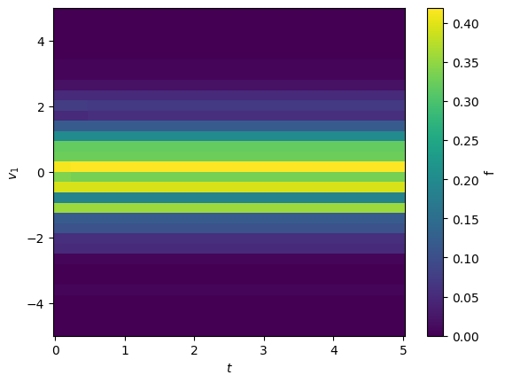
Velocity moments are weighted xarray reductions. The bin widths and velocity coordinate remain labeled, making the density, mean velocity, and variance explicit.
[29]:
dv1 = phase_space.v1.differentiate("v1")
density = (phase_space * dv1).sum("v1")
mean_v1 = (phase_space * phase_space.v1 * dv1).sum("v1") / density
variance_v1 = (phase_space * (phase_space.v1 - mean_v1) ** 2 * dv1).sum("v1") / density
mean_density = density.mean(spatial)
mean_density.plot.line(x="t")
variance_v1.mean(spatial).plot.line(x="t")
[29]:
[<matplotlib.lines.Line2D at 0x7f8ee1c6be50>]
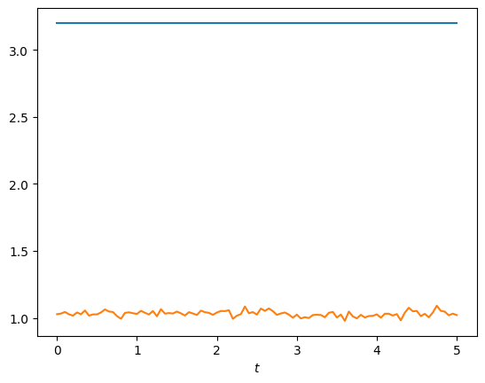
Physical units#
Products are in the normalization of the model. out.units holds the units of that normalization and out.to_si(product) converts a product: the time coordinate to seconds, the mapped coordinates X, Y, Z to meters and the velocities v1, v2, v3 to m/s. The values are converted only when unit= names the unit the variable was normalized with ("x", "B", "n", "v", "t", "p", "rho", "j" or "kBT"), or a number for a composite unit
together with its label, because a product does not record which unit its variable uses. The original product is not modified.
[30]:
print(f"1 length unit = {out.units.x} m, 1 velocity unit = {out.units.v:.4g} m/s, 1 time unit = {out.units.t:.4g} s")
phase_space_si = out.to_si(phase_space)
print(phase_space_si.v1.attrs["units"], phase_space_si.t.attrs["units"])
phase_space_si.isel(t=-1).plot(x="eta1", y="v1")
1 length unit = 1.0 m, 1 velocity unit = 2.998e+08 m/s, 1 time unit = 3.336e-09 s
m/s s
[30]:
<matplotlib.collections.QuadMesh at 0x7f8ee86168f0>
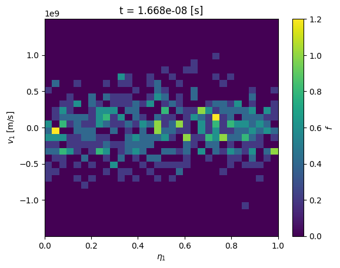
Save standard output#
Products are xarray objects, so figures are saved with Matplotlib’s plt.savefig(path) and arrays with xarray’s own writers, for example phi.to_netcdf(path). For a compact record of the run, out.report() writes the full scalar history as scalars.csv and a report listing the run metadata, every available product, and the dimensions and units of any products passed with products=. By default the files go to post_processing/report/; format is "markdown" or "html",
and the return value is the path of the report file.
[31]:
report = out.report(products=["em_fields/phi"], format="html")
print("Wrote:")
for path in (report, os.path.join(os.path.dirname(report), "scalars.csv")):
print(" ", os.path.relpath(path, out.path_out))
Wrote:
post_processing/report/report.html
post_processing/report/scalars.csv
Comparing runs#
Time series accept arrays of other simulations, so comparing runs needs nothing special. Series are labelled by the run they come from, and the runs may have different time grids.
[32]:
sim_coarse = Simulation(
model=build_model(),
env=EnvironmentOptions(out_folders=demo_root, sim_folder="vlasov_ampere_coarse", save_restart=False),
time_opts=Time(dt=0.1, Tend=5.0),
domain=domains.Cuboid(r1=2 * 3.141592653589793),
equil=equils.HomogenSlab(),
grid=grids.TensorProductGrid(num_elements=(16, 1, 1)),
derham_opts=DerhamOptions(degree=(2, 1, 1)),
)
out_coarse = sim_coarse.run(profiling_activated=True)
fig, ax = plt.subplots()
out.scalars.electric_energy.plot.line(ax=ax, label="dt = 0.05")
out_coarse.scalars.electric_energy.plot.line(ax=ax, label="dt = 0.1")
ax.legend()
/opt/hostedtoolcache/Python/3.10.22/x64/lib/python3.10/site-packages/struphy/models/species.py:215: UserWarning: Override equation parameter self.alpha =1.0
warnings.warn(f"Override equation parameter {self.alpha =}")
/opt/hostedtoolcache/Python/3.10.22/x64/lib/python3.10/site-packages/struphy/models/species.py:222: UserWarning: Override equation parameter self.epsilon =-1.0
warnings.warn(f"Override equation parameter {self.epsilon =}")
Stabilizing Poisson solve with self.options.sigma_1 =1e-14
Time stepping: 100%|██████████| 50/50 [00:00<00:00, 63.89step/s]
╭─────────────────────────────────────────────────────────────────────────────────────────╮
│ region % session total [s] │
├─────────────────────────────────────────────────────────────────────────────────────────┤
│ scope_profiler.session 100.00% 0.944197 │
│ └─ (own) 1.31% 0.012389 │
│ └─ setup: total 16.87% 0.159296 │
│ │ └─ (own) 0.08% 0.000720 │
│ │ └─ setup: allocate 7.95% 0.075082 │
│ │ │ └─ (own) 0.01% 0.000064 │
│ │ │ └─ allocate feec 5.22% 0.049311 │
│ │ │ │ └─ (own) 0.01% 0.000077 │
│ │ │ │ └─ setup: derham 5.21% 0.049183 │
│ │ │ │ └─ setup: mass ops 0.00% 0.000009 │
│ │ │ │ └─ setup: basis ops 0.00% 0.000009 │
│ │ │ │ └─ setup: projected equil 0.00% 0.000032 │
│ │ │ └─ allocate variables 0.31% 0.002912 │
│ │ │ │ └─ (own) 0.01% 0.000090 │
│ │ │ │ └─ allocate var: em_fields.e_field 0.02% 0.000234 │
│ │ │ │ └─ allocate var: em_fields.phi 0.01% 0.000072 │
│ │ │ │ └─ allocate var: kinetic_ions.var 0.27% 0.002516 │
│ │ │ │ │ └─ (own) 0.25% 0.002387 │
│ │ │ │ │ └─ do_sort 0.01% 0.000129 │
│ │ │ └─ allocate propagators 1.71% 0.016129 │
│ │ │ │ └─ (own) 0.00% 0.000045 │
│ │ │ │ └─ allocate prop: PushEta 0.01% 0.000048 │
│ │ │ │ └─ allocate prop: VlasovAmpereCoupling 1.70% 0.016035 │
│ │ │ │ │ └─ (own) 1.60% 0.015065 │
│ │ │ │ │ └─ weights eval for None 0.00% 0.000003 │
│ │ │ │ │ └─ weights eval for M1 0.04% 0.000367 │
│ │ │ │ │ └─ assemble M1 0.06% 0.000600 │
│ │ │ └─ model post allocate 0.71% 0.006668 │
│ │ │ │ └─ (own) 0.32% 0.002977 │
│ │ │ │ └─ weights eval for M0 0.02% 0.000156 │
│ │ │ │ └─ assemble M0 0.03% 0.000254 │
│ │ │ │ └─ accum: charge_density_0form 0.02% 0.000216 │
│ │ │ │ │ └─ (own) 0.00% 0.000030 │
│ │ │ │ │ └─ kernel: charge_density_0form 0.01% 0.000128 │
│ │ │ │ │ └─ accum comm: charge_density_0form 0.01% 0.000058 │
│ │ │ │ └─ solve: PoissonSolve 0.32% 0.003007 │
│ │ │ │ └─ update_feec_variables 0.01% 0.000058 │
│ │ └─ setup: run metadata 0.13% 0.001201 │
│ │ └─ setup: data storage 0.61% 0.005747 │
│ │ └─ setup: geometry vtk 6.37% 0.060175 │
│ │ └─ setup: plasma params 0.34% 0.003234 │
│ │ └─ setup: initial diagnostics 0.10% 0.000981 │
│ │ └─ setup: hdf5 datasets 1.29% 0.012155 │
│ └─ model.integrate (50x) 39.24% 0.370510 │
│ │ └─ (own) 0.09% 0.000851 │
│ │ └─ prop: PushEta (50x) 3.64% 0.034372 │
│ │ │ └─ (own) 1.60% 0.015106 │
│ │ │ └─ pusher: push_eta_stage (50x) 2.04% 0.019266 │
│ │ │ │ └─ (own) 0.77% 0.007226 │
│ │ │ │ └─ kernel: push_eta_stage (200x) 1.28% 0.012040 │
│ │ └─ prop: VlasovAmpereCoupling (50x) 35.51% 0.335287 │
│ │ │ └─ (own) 2.52% 0.023826 │
│ │ │ └─ accum: vlasov_maxwell (50x) 8.75% 0.082574 │
│ │ │ │ └─ (own) 0.67% 0.006281 │
│ │ │ │ └─ kernel: vlasov_maxwell (50x) 3.96% 0.037419 │
│ │ │ │ └─ accum comm: vlasov_maxwell (100x) 4.12% 0.038874 │
│ │ │ └─ solve: SchurSolver (50x) 22.16% 0.209196 │
│ │ │ └─ pusher: push_v_with_efield (50x) 1.46% 0.013775 │
│ │ │ │ └─ (own) 0.40% 0.003733 │
│ │ │ │ └─ kernel: push_v_with_efield (50x) 1.06% 0.010042 │
│ │ │ └─ update_feec_variables (50x) 0.63% 0.005917 │
│ └─ diagnostics (50x) 4.43% 0.041792 │
│ └─ save data (51x) 38.15% 0.360210 │
╰─────────────────────────────────────────────────────────────────────────────────────────╯
╭─ Info ────────────────────────────────────────────────────────────────────────────────────────────────────────────────────────────────────────────────────╮
│ Summary: ../../../../../../../../tmp/struphy_postprocessing_hs3hu9_2/vlasov_ampere_coarse/profiling_data.h5 (1 rank) │
│ │
│ Explore: │
│ Inspect: scope-profiler inspect ../../../../../../../../tmp/struphy_postprocessing_hs3hu9_2/vlasov_ampere_coarse/profiling_data.h5 │
│ TUI: scope-profiler tui ../../../../../../../../tmp/struphy_postprocessing_hs3hu9_2/vlasov_ampere_coarse/profiling_data.h5 │
│ │
│ Visualize and export: │
│ Plot: scope-profiler plot default ../../../../../../../../tmp/struphy_postprocessing_hs3hu9_2/vlasov_ampere_coarse/profiling_data.h5 -o plots --show │
│ Report: scope-profiler report ../../../../../../../../tmp/struphy_postprocessing_hs3hu9_2/vlasov_ampere_coarse/profiling_data.h5 -o report.html │
│ Export: scope-profiler export plot-data ../../../../../../../../tmp/struphy_postprocessing_hs3hu9_2/vlasov_ampere_coarse/profiling_data.h5 -o data │
│ Lines: scope-profiler line-profile ../../../../../../../../tmp/struphy_postprocessing_hs3hu9_2/vlasov_ampere_coarse/profiling_data.h5 │
│ │
│ Compare runs: │
│ Diff: scope-profiler diff BASE.h5 CANDIDATE.h5 │
│ Check: scope-profiler check BASE.h5 CANDIDATE.h5 │
│ │
│ Durations are in seconds. │
│ Regions may nest, so the summed total can exceed the wall-clock time. │
│ % session uses wall-clock coverage; overlapping recursive calls count once. │
╰───────────────────────────────────────────────────────────────────────────────────────────────────────────────────────────────────────────────────────────╯
[32]:
<matplotlib.legend.Legend at 0x7f8ee849f940>
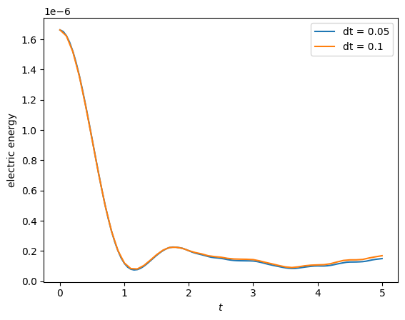
Profiling#
A run started with sim.run(profiling_activated=True) records how long each region of the code takes, and out.profile reads that record back. Regions are the setup steps, every propagator (prop: ...), pusher, accumulation, compiled kernel (kernel: ...) and linear solve. Regions nest, so a region’s time includes the regions it calls and the times of different regions must not be added up. summary() returns a dataset along the dimension region, sorted by total time;
table() prints it. Filter with prefix and limit with top.
[33]:
print(out.profile.table(top=8))
kernels = out.profile.summary(prefix="kernel:")
print(kernels.total_time.to_series())
Profile: dt=0.05, algo=LieTrotter, Nel=(16, 1, 1), p=(2, 1, 1) (1 rank(s), 1.690 s)
Region Calls Total [s] Mean [ms] Share
-------------------------- -------- ---------- ---------- -------
scope_profiler.session 1 1.690 1689.778 100.0%
model.integrate 100 0.726 7.255 42.9%
save data 101 0.703 6.962 41.6%
prop: VlasovAmpereCoupling 100 0.659 6.589 39.0%
solve: SchurSolver 100 0.413 4.126 24.4%
accum: vlasov_maxwell 100 0.164 1.636 9.7%
setup: total 1 0.159 159.174 9.4%
diagnostics 100 0.081 0.807 4.8%
region
kernel: vlasov_maxwell 0.074651
kernel: push_eta_stage 0.023172
kernel: push_v_with_efield 0.019424
kernel: charge_density_0form 0.000145
Name: total_time, dtype: float64
compare() puts the same statistic of several runs side by side, with runs whose region is missing as NaN. Here the two runs of the previous section differ only in the time step, so the number of calls per propagator halves for dt = 0.1.
[34]:
calls = out.profile.compare(out_coarse, metric="calls", prefix="prop:")
print(calls)
<xarray.DataArray 'calls' (run: 2, region: 2)> Size: 32B
array([[100., 100.],
[ 50., 50.]])
Coordinates:
* region (region) <U26 208B 'prop: VlasovAmpereCoupling' 'prop: PushEta'
* run (run) <U53 424B 'dt=0.05, algo=LieTrotter, Nel=(16, 1, 1), p=(2,...
Attributes:
label: calls per rank
Other models#
The interface is the same for every model; only the products differ. Two more short runs show the two product types the Vlasov–Ampère demo does not have: SPH densities, and vector fields on a mapped domain.
SPH densities#
A standing sound wave discretized with SPH markers. KernelDensityPlot reconstructs the density on a grid, which appears under out.densities, while BinningPlot produces the binned quantities under out.distributions.
[35]:
sph_model = ViscousEulerSPH(with_B0=False, with_viscosity=False)
sph_model.propagators.push_eta.options = sph_model.propagators.push_eta.Options(
butcher=ButcherTableau(algo="forward_euler"),
)
sph_model.propagators.push_sph_p.options = sph_model.propagators.push_sph_p.Options(kernel_type="gaussian_1d")
sph_model.euler_fluid.set_markers(
loading_params=LoadingParameters(ppb=8, loading="tesselation"),
weights_params=WeightsParameters(),
boundary_params=BoundaryParameters(),
sorting_params=SortingParameters(boxes_per_dim=(12, 1, 1), dims_mask=(True, False, False)),
saving_params=SavingParameters(
binning_plots=(BinningPlot(slice="e1", n_bins=(32,), ranges=(0.0, 1.0)),),
kernel_density_plots=(KernelDensityPlot(pts_e1=41, pts_e2=1),),
),
)
sph_model.euler_fluid.var.add_background(equils.ConstantVelocity())
sph_model.euler_fluid.var.add_perturbation(del_n=perturbations.ModesSin(ls=(1,), amps=(1.0e-2,)))
sph = Simulation(
model=sph_model,
env=EnvironmentOptions(out_folders=demo_root, sim_folder="sph_soundwave", save_restart=False),
time_opts=Time(dt=0.03125, Tend=2.5, split_algo="Strang"),
domain=domains.Cuboid(r1=2.5),
grid=None,
derham_opts=None,
)
out_sph = sph.run()
print("densities:", tuple(out_sph.density_catalog))
print("binned:", tuple(out_sph.distribution_catalog))
Time stepping: 100%|██████████| 80/80 [00:00<00:00, 136.84step/s]
No post-processed data in /tmp/struphy_postprocessing_hs3hu9_2/sph_soundwave, processing with default options (call out.pproc(...) to choose them)
Post-processing path /tmp/struphy_postprocessing_hs3hu9_2/sph_soundwave
No feec fields found in hdf5 file, skipping post-processing of fields.
Evaluation of 3 marker orbits for euler_fluid
100%|██████████| 81/81 [00:00<00:00, 829.02it/s]
Evaluation of distribution functions for euler_fluid
0 starting post-processing of distribution functions for /tmp/struphy_postprocessing_hs3hu9_2/sph_soundwave/post_processing/kinetic_data/euler_fluid ...
100%|██████████| 1/1 [00:00<00:00, 2168.72it/s]
0%| | 0/1 [00:00<?, ?it/s]rank = 0 ----------------------------
self._pproc_rank =0 with xp.sum(data) =np.float64(1036.8000000000002) and xp.sum(data_df) =np.float64(1036.8000000000002)
self._pproc_rank =0 with xp.sum(data) =np.float64(1036.8000000000002) and xp.sum(data_df) =np.float64(1036.8000000000002)
self._pproc_rank =0 done.
100%|██████████| 1/1 [00:00<00:00, 30.73it/s]
Evaluation of sph density for euler_fluid
100%|██████████| 1/1 [00:00<00:00, 17.79it/s]
densities: ('euler_fluid/view_0/n',)
binned: ('euler_fluid/e1_density/f', 'euler_fluid/e1_density/delta_f')
For a one-dimensional run, the clearest picture is a space-time map: the sweep dimension t may be used as a display axis.
[36]:
density = out_sph.euler_fluid.view_0.n.isel(eta2=0, eta3=0)
density.plot(x="t", y="eta1")
[36]:
<matplotlib.collections.QuadMesh at 0x7f8ee181ea40>
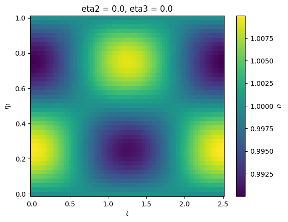
Products are plain xarray.DataArray objects, so anything xarray can do works directly, for example profiles at selected times:
[37]:
density.isel(t=[0, len(density.t) // 4, len(density.t) // 2]).plot.line(x="eta1")
[37]:
[<matplotlib.lines.Line2D at 0x7f8ee1720070>,
<matplotlib.lines.Line2D at 0x7f8ee17201c0>,
<matplotlib.lines.Line2D at 0x7f8ee1720310>]
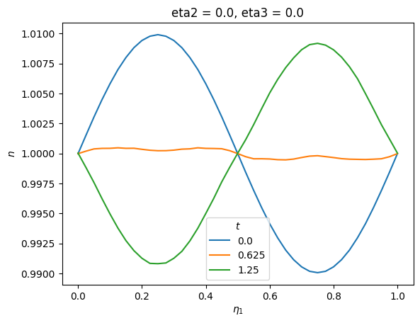
Vector fields on a mapped domain#
A coaxial waveguide mode of the Maxwell model, on an annulus. With physical=True the post-processing also computes the Cartesian field components (*_xyz), and coords="physical" draws them on the mapped grid, with the plane chosen by plane.
[38]:
a1, a2 = 2.326744, 3.686839
maxwell_model = Maxwell()
maxwell_model.propagators.maxwell.options = maxwell_model.propagators.maxwell.Options(algo="implicit")
maxwell_model.em_fields.e_field.add_perturbation(perturbations.CoaxialWaveguideElectric_r(m=3, a1=a1, a2=a2))
maxwell_model.em_fields.e_field.add_perturbation(perturbations.CoaxialWaveguideElectric_theta(m=3, a1=a1, a2=a2))
maxwell_model.em_fields.b_field.add_perturbation(perturbations.CoaxialWaveguideMagnetic(m=3, a1=a1, a2=a2))
coaxial = Simulation(
model=maxwell_model,
env=EnvironmentOptions(out_folders=demo_root, sim_folder="coaxial", save_restart=False),
time_opts=Time(dt=0.05, Tend=2.0),
domain=domains.HollowCylinder(a1=a1, a2=a2, Lz=2.0),
equil=equils.HomogenSlab(),
grid=grids.TensorProductGrid(num_elements=(24, 48, 1)),
derham_opts=DerhamOptions(degree=(2, 2, 1), bcs=(("dirichlet", "dirichlet"), None, None)),
)
out_coaxial = coaxial.run()
out_coaxial.pproc(physical=True)
print("fields:", tuple(out_coaxial.field_catalog))
print("dimensions:", out_coaxial.em_fields.b_field_xyz.dims)
Time stepping: 100%|██████████| 40/40 [00:01<00:00, 31.07step/s]
Post-processing path /tmp/struphy_postprocessing_hs3hu9_2/coaxial
Reading hdf5 data of following species:
em_fields:
b_field: <HDF5 group "/feec/em_fields/b_field" (3 members)>
e_field: <HDF5 group "/feec/em_fields/e_field" (3 members)>
Creation of Struphy Fields done.
Evaluating fields ...
100%|██████████| 41/41 [00:00<00:00, 131.01it/s]
No kinetic data found in hdf5 file, skipping post-processing of kinetic data.
fields: ('em_fields/b_field', 'em_fields/b_field_xyz', 'em_fields/e_field', 'em_fields/e_field_xyz')
dimensions: ('t', 'component', 'eta1', 'eta2', 'eta3')
[39]:
out_coaxial.em_fields.b_field_xyz.isel(t=-1, component=2, eta3=0).plot(x="eta1", y="eta2")
[39]:
<matplotlib.collections.QuadMesh at 0x7f8edfbf0310>
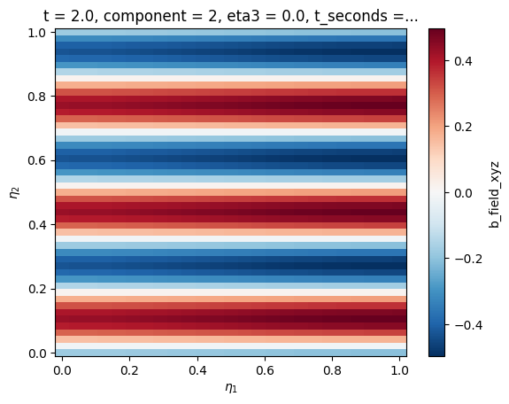
[40]:
out_coaxial.em_fields.b_field_xyz.isel(component=2, eta3=0).plot(x="eta1", y="eta2", col="t", col_wrap=4)
[40]:
<xarray.plot.facetgrid.FacetGrid at 0x7f8ee82cddb0>
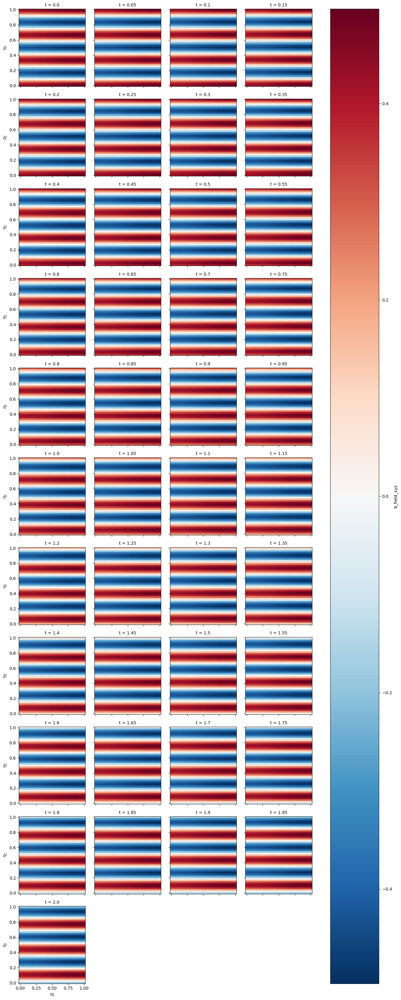
Representation conversion on a torus#
A toroidal map makes the distinction between FEEC representations visible. The saved electric field is an H(curl) 1-form, so its source representation is inferred as 1. We evaluate one poloidal line directly from saved spline coefficients, then request its native 1-form, normalized-vector, and Cartesian-vector representations. These differ away from a Cartesian map because the metric factors vary around the torus.
[41]:
torus_model = Maxwell()
torus_model.em_fields.e_field.save_data = True
torus_model.em_fields.e_field.add_perturbation(perturbations.ModesCos(ms=(1,), amps=(0.1,), given_in_basis="1", comp=1))
torus = Simulation(
model=torus_model,
env=EnvironmentOptions(out_folders=demo_root, sim_folder="representation_torus", save_restart=False),
time_opts=Time(dt=0.05, Tend=0.05),
domain=domains.HollowTorus(a1=0.2, a2=0.4, R0=1.0, tor_period=1),
equil=equils.HomogenSlab(),
grid=grids.TensorProductGrid(num_elements=(6, 12, 2)),
derham_opts=DerhamOptions(degree=(2, 2, 2), bcs=(("dirichlet", "dirichlet"), None, None)),
)
out_torus = torus.run()
Time stepping: 100%|██████████| 1/1 [00:00<00:00, 15.83step/s]
[42]:
eta2_line = np.linspace(0.0, 1.0, 256)
component = 0
common = dict(eta1=0.7, eta2=eta2_line, eta3=0.0, t=-1, component=component)
e_1 = out_torus.evaluate("em_fields/e_field", representation="1", **common)
e_norm = out_torus.evaluate("em_fields/e_field", representation="norm", **common)
e_v = out_torus.evaluate("em_fields/e_field", representation="v", **common)
fig, ax = plt.subplots(ncols=3, figsize=(15, 5))
i = 0
for field, label in ((e_1, "1-form"), (e_norm, "normalized vector"), (e_v, "Vector field")):
print(label, field)
ax[i].plot(eta2_line, field, label=label)
ax[i].set(xlabel=r"$\eta_2$", ylabel=label, title="H(curl) field representations on a torus")
i += 1
# ax.legend()
1-form <xarray.DataArray 'e_field' (eta2: 256)> Size: 2kB
array([-6.41203941e-19, -3.53796901e-06, -7.04305688e-06, -1.05152636e-05,
-1.39545892e-05, -1.73610337e-05, -2.07345970e-05, -2.40752792e-05,
-2.73830803e-05, -3.06580003e-05, -3.39000391e-05, -3.71091967e-05,
-4.02854733e-05, -4.34288687e-05, -4.65393830e-05, -4.96170161e-05,
-5.26617681e-05, -5.56736390e-05, -5.86526287e-05, -6.15987374e-05,
-6.45119648e-05, -6.73923112e-05, -7.02249907e-05, -7.29738606e-05,
-7.56372781e-05, -7.82152431e-05, -8.07077556e-05, -8.31148156e-05,
-8.54364232e-05, -8.76725783e-05, -8.98232810e-05, -9.18885312e-05,
-9.38683289e-05, -9.57626742e-05, -9.75715670e-05, -9.92950073e-05,
-1.00932995e-04, -1.02485531e-04, -1.03952614e-04, -1.05334244e-04,
-1.06630422e-04, -1.07841148e-04, -1.08966421e-04, -1.10004499e-04,
-1.10944932e-04, -1.11785978e-04, -1.12527635e-04, -1.13169905e-04,
-1.13712787e-04, -1.14156281e-04, -1.14500388e-04, -1.14745107e-04,
-1.14890439e-04, -1.14936382e-04, -1.14882938e-04, -1.14730106e-04,
-1.14477887e-04, -1.14126280e-04, -1.13675285e-04, -1.13124903e-04,
-1.12475132e-04, -1.11725974e-04, -1.10877429e-04, -1.09929496e-04,
-1.08883498e-04, -1.07768560e-04, -1.06596596e-04, -1.05367605e-04,
-1.04081587e-04, -1.02738543e-04, -1.01338472e-04, -9.98813749e-05,
-9.83672509e-05, -9.67961003e-05, -9.51679231e-05, -9.34827194e-05,
-9.17404890e-05, -8.99412321e-05, -8.80849485e-05, -8.61716384e-05,
...
8.61716384e-05, 8.80849485e-05, 8.99412321e-05, 9.17404890e-05,
9.34827194e-05, 9.51679231e-05, 9.67961003e-05, 9.83672509e-05,
9.98813749e-05, 1.01338472e-04, 1.02738543e-04, 1.04081587e-04,
1.05367605e-04, 1.06596596e-04, 1.07768560e-04, 1.08883498e-04,
1.09929496e-04, 1.10877429e-04, 1.11725974e-04, 1.12475132e-04,
1.13124903e-04, 1.13675285e-04, 1.14126280e-04, 1.14477887e-04,
1.14730106e-04, 1.14882938e-04, 1.14936382e-04, 1.14890439e-04,
1.14745107e-04, 1.14500388e-04, 1.14156281e-04, 1.13712787e-04,
1.13169905e-04, 1.12527635e-04, 1.11785978e-04, 1.10944932e-04,
1.10004499e-04, 1.08966421e-04, 1.07841148e-04, 1.06630422e-04,
1.05334244e-04, 1.03952614e-04, 1.02485531e-04, 1.00932995e-04,
9.92950073e-05, 9.75715670e-05, 9.57626742e-05, 9.38683289e-05,
9.18885312e-05, 8.98232810e-05, 8.76725783e-05, 8.54364232e-05,
8.31148156e-05, 8.07077556e-05, 7.82152431e-05, 7.56372781e-05,
7.29738606e-05, 7.02249907e-05, 6.73923112e-05, 6.45119648e-05,
6.15987374e-05, 5.86526287e-05, 5.56736390e-05, 5.26617681e-05,
4.96170161e-05, 4.65393830e-05, 4.34288687e-05, 4.02854733e-05,
3.71091967e-05, 3.39000391e-05, 3.06580003e-05, 2.73830803e-05,
2.40752792e-05, 2.07345970e-05, 1.73610337e-05, 1.39545892e-05,
1.05152636e-05, 7.04305688e-06, 3.53796901e-06, -6.56450534e-19])
Coordinates:
t float64 8B 0.05
* eta2 (eta2) float64 2kB 0.0 0.003922 0.007843 ... 0.9922 0.9961 1.0
component int64 8B 0
t_seconds float64 8B 1.668e-10
X (eta2) float64 2kB 1.34 1.34 1.34 1.339 ... 1.339 1.34 1.34 1.34
Y (eta2) float64 2kB -0.0 -0.0 -0.0 -0.0 ... -0.0 -0.0 -0.0 -0.0
Z (eta2) float64 2kB 0.0 0.008377 0.01675 ... -0.008377 -8.328e-17
Attributes:
run: dt=0.05, algo=LieTrotter, Nel=(6, 12, 2), p=(2, 2, 2)
run_name: representation_torus
normalized vector <xarray.DataArray 'e_field' (eta2: 256)> Size: 2kB
array([-3.20601971e-18, -1.76898450e-05, -3.52152844e-05, -5.25763181e-05,
-6.97729461e-05, -8.68051685e-05, -1.03672985e-04, -1.20376396e-04,
-1.36915402e-04, -1.53290001e-04, -1.69500195e-04, -1.85545984e-04,
-2.01427366e-04, -2.17144343e-04, -2.32696915e-04, -2.48085081e-04,
-2.63308841e-04, -2.78368195e-04, -2.93263144e-04, -3.07993687e-04,
-3.22559824e-04, -3.36961556e-04, -3.51124954e-04, -3.64869303e-04,
-3.78186390e-04, -3.91076215e-04, -4.03538778e-04, -4.15574078e-04,
-4.27182116e-04, -4.38362892e-04, -4.49116405e-04, -4.59442656e-04,
-4.69341645e-04, -4.78813371e-04, -4.87857835e-04, -4.96475037e-04,
-5.04664976e-04, -5.12427653e-04, -5.19763068e-04, -5.26671220e-04,
-5.33152110e-04, -5.39205738e-04, -5.44832103e-04, -5.50022497e-04,
-5.54724661e-04, -5.58929888e-04, -5.62638175e-04, -5.65849524e-04,
-5.68563935e-04, -5.70781407e-04, -5.72501941e-04, -5.73725536e-04,
-5.74452193e-04, -5.74681911e-04, -5.74414691e-04, -5.73650532e-04,
-5.72389435e-04, -5.70631400e-04, -5.68376426e-04, -5.65624513e-04,
-5.62375662e-04, -5.58629872e-04, -5.54387144e-04, -5.49647478e-04,
-5.44417492e-04, -5.38842802e-04, -5.32982980e-04, -5.26838025e-04,
-5.20407937e-04, -5.13692716e-04, -5.06692362e-04, -4.99406875e-04,
-4.91836255e-04, -4.83980502e-04, -4.75839616e-04, -4.67413597e-04,
-4.58702445e-04, -4.49706160e-04, -4.40424743e-04, -4.30858192e-04,
...
4.30858192e-04, 4.40424743e-04, 4.49706160e-04, 4.58702445e-04,
4.67413597e-04, 4.75839616e-04, 4.83980502e-04, 4.91836255e-04,
4.99406875e-04, 5.06692362e-04, 5.13692716e-04, 5.20407937e-04,
5.26838025e-04, 5.32982980e-04, 5.38842802e-04, 5.44417492e-04,
5.49647478e-04, 5.54387144e-04, 5.58629872e-04, 5.62375662e-04,
5.65624513e-04, 5.68376426e-04, 5.70631400e-04, 5.72389435e-04,
5.73650532e-04, 5.74414691e-04, 5.74681911e-04, 5.74452193e-04,
5.73725536e-04, 5.72501941e-04, 5.70781407e-04, 5.68563935e-04,
5.65849524e-04, 5.62638175e-04, 5.58929888e-04, 5.54724661e-04,
5.50022497e-04, 5.44832103e-04, 5.39205738e-04, 5.33152110e-04,
5.26671220e-04, 5.19763068e-04, 5.12427653e-04, 5.04664976e-04,
4.96475037e-04, 4.87857835e-04, 4.78813371e-04, 4.69341645e-04,
4.59442656e-04, 4.49116405e-04, 4.38362892e-04, 4.27182116e-04,
4.15574078e-04, 4.03538778e-04, 3.91076215e-04, 3.78186390e-04,
3.64869303e-04, 3.51124954e-04, 3.36961556e-04, 3.22559824e-04,
3.07993687e-04, 2.93263144e-04, 2.78368195e-04, 2.63308841e-04,
2.48085081e-04, 2.32696915e-04, 2.17144343e-04, 2.01427366e-04,
1.85545984e-04, 1.69500195e-04, 1.53290001e-04, 1.36915402e-04,
1.20376396e-04, 1.03672985e-04, 8.68051685e-05, 6.97729461e-05,
5.25763181e-05, 3.52152844e-05, 1.76898450e-05, -3.28225267e-18])
Coordinates:
t float64 8B 0.05
* eta2 (eta2) float64 2kB 0.0 0.003922 0.007843 ... 0.9922 0.9961 1.0
component int64 8B 0
t_seconds float64 8B 1.668e-10
X (eta2) float64 2kB 1.34 1.34 1.34 1.339 ... 1.339 1.34 1.34 1.34
Y (eta2) float64 2kB -0.0 -0.0 -0.0 -0.0 ... -0.0 -0.0 -0.0 -0.0
Z (eta2) float64 2kB 0.0 0.008377 0.01675 ... -0.008377 -8.328e-17
Attributes:
run: dt=0.05, algo=LieTrotter, Nel=(6, 12, 2), p=(2, 2, 2)
run_name: representation_torus
Vector field <xarray.DataArray 'e_field' (eta2: 256)> Size: 2kB
array([-1.60300985e-17, -8.84492251e-05, -1.76076422e-04, -2.62881590e-04,
-3.48864731e-04, -4.34025842e-04, -5.18364926e-04, -6.01881981e-04,
-6.84577008e-04, -7.66450006e-04, -8.47500977e-04, -9.27729919e-04,
-1.00713683e-03, -1.08572172e-03, -1.16348457e-03, -1.24042540e-03,
-1.31654420e-03, -1.39184097e-03, -1.46631572e-03, -1.53996843e-03,
-1.61279912e-03, -1.68480778e-03, -1.75562477e-03, -1.82434652e-03,
-1.89093195e-03, -1.95538108e-03, -2.01769389e-03, -2.07787039e-03,
-2.13591058e-03, -2.19181446e-03, -2.24558202e-03, -2.29721328e-03,
-2.34670822e-03, -2.39406685e-03, -2.43928917e-03, -2.48237518e-03,
-2.52332488e-03, -2.56213827e-03, -2.59881534e-03, -2.63335610e-03,
-2.66576055e-03, -2.69602869e-03, -2.72416052e-03, -2.75011248e-03,
-2.77362331e-03, -2.79464944e-03, -2.81319088e-03, -2.82924762e-03,
-2.84281968e-03, -2.85390704e-03, -2.86250970e-03, -2.86862768e-03,
-2.87226097e-03, -2.87340956e-03, -2.87207346e-03, -2.86825266e-03,
-2.86194718e-03, -2.85315700e-03, -2.84188213e-03, -2.82812256e-03,
-2.81187831e-03, -2.79314936e-03, -2.77193572e-03, -2.74823739e-03,
-2.72208746e-03, -2.69421401e-03, -2.66491490e-03, -2.63419012e-03,
-2.60203968e-03, -2.56846358e-03, -2.53346181e-03, -2.49703437e-03,
-2.45918127e-03, -2.41990251e-03, -2.37919808e-03, -2.33706798e-03,
-2.29351223e-03, -2.24853080e-03, -2.20212371e-03, -2.15429096e-03,
...
2.15429096e-03, 2.20212371e-03, 2.24853080e-03, 2.29351223e-03,
2.33706798e-03, 2.37919808e-03, 2.41990251e-03, 2.45918127e-03,
2.49703437e-03, 2.53346181e-03, 2.56846358e-03, 2.60203968e-03,
2.63419012e-03, 2.66491490e-03, 2.69421401e-03, 2.72208746e-03,
2.74823739e-03, 2.77193572e-03, 2.79314936e-03, 2.81187831e-03,
2.82812256e-03, 2.84188213e-03, 2.85315700e-03, 2.86194718e-03,
2.86825266e-03, 2.87207346e-03, 2.87340956e-03, 2.87226097e-03,
2.86862768e-03, 2.86250970e-03, 2.85390704e-03, 2.84281968e-03,
2.82924762e-03, 2.81319088e-03, 2.79464944e-03, 2.77362331e-03,
2.75011248e-03, 2.72416052e-03, 2.69602869e-03, 2.66576055e-03,
2.63335610e-03, 2.59881534e-03, 2.56213827e-03, 2.52332488e-03,
2.48237518e-03, 2.43928917e-03, 2.39406685e-03, 2.34670822e-03,
2.29721328e-03, 2.24558202e-03, 2.19181446e-03, 2.13591058e-03,
2.07787039e-03, 2.01769389e-03, 1.95538108e-03, 1.89093195e-03,
1.82434652e-03, 1.75562477e-03, 1.68480778e-03, 1.61279912e-03,
1.53996843e-03, 1.46631572e-03, 1.39184097e-03, 1.31654420e-03,
1.24042540e-03, 1.16348457e-03, 1.08572172e-03, 1.00713683e-03,
9.27729919e-04, 8.47500977e-04, 7.66450006e-04, 6.84577008e-04,
6.01881981e-04, 5.18364926e-04, 4.34025842e-04, 3.48864731e-04,
2.62881590e-04, 1.76076422e-04, 8.84492251e-05, -1.64112634e-17])
Coordinates:
t float64 8B 0.05
* eta2 (eta2) float64 2kB 0.0 0.003922 0.007843 ... 0.9922 0.9961 1.0
component int64 8B 0
t_seconds float64 8B 1.668e-10
X (eta2) float64 2kB 1.34 1.34 1.34 1.339 ... 1.339 1.34 1.34 1.34
Y (eta2) float64 2kB -0.0 -0.0 -0.0 -0.0 ... -0.0 -0.0 -0.0 -0.0
Z (eta2) float64 2kB 0.0 0.008377 0.01675 ... -0.008377 -8.328e-17
Attributes:
run: dt=0.05, algo=LieTrotter, Nel=(6, 12, 2), p=(2, 2, 2)
run_name: representation_torus
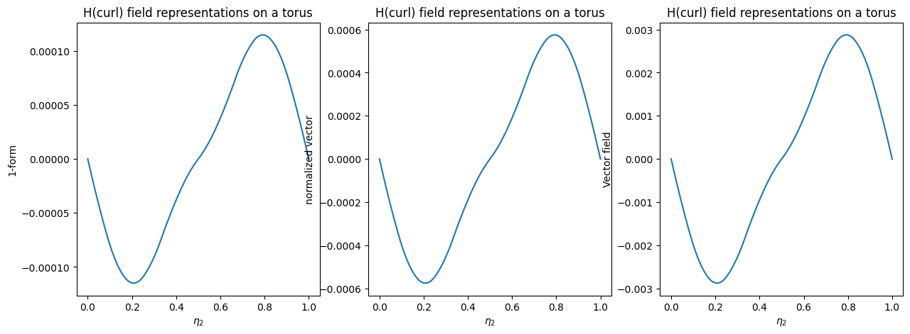
Apply the workflow to another run#
For an already completed simulation, possibly in a separate process without MPI, open its output folder:
import struphy
out = struphy.Output("/path/to/sim_1").pproc(physical=True)
out.domain, out.model.units # reconstructed directly from saved metadata
Use out.scalars, out.fields, out.distributions, out.orbits, and out.densities. Attribute access is the normal interactive API; the corresponding *_catalog mappings are intended for generic loops and tooling.